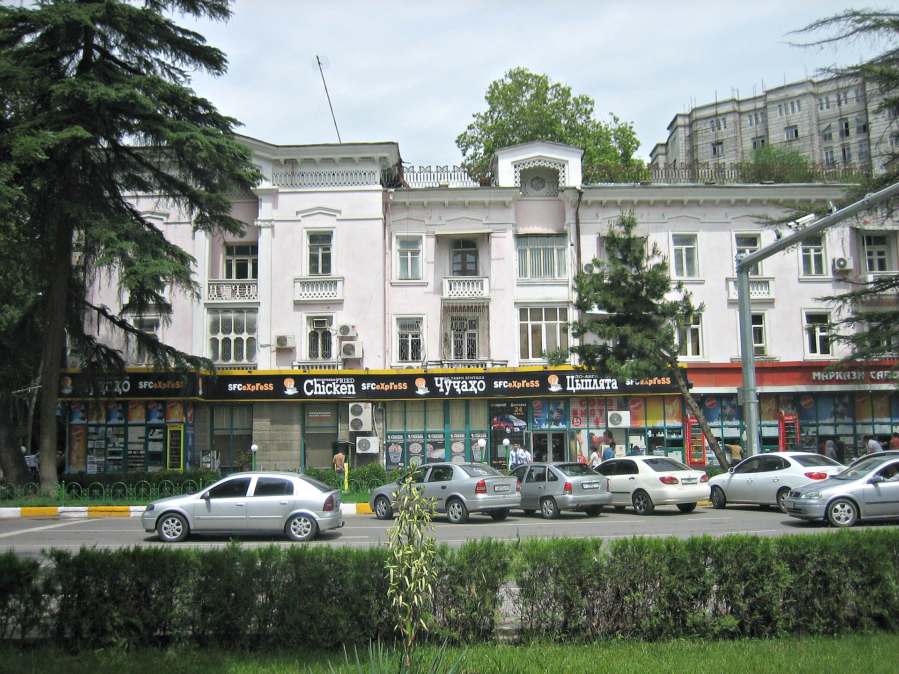

Tajikistan hosts Putin despite ICC warrant — EU expresses regret
Vladimir Putin visited Dushanbe on 19–20 November. The EU regretted that Tajikistan failed to execute the International Criminal Court's arrest warrant.

Russian President Vladimir Putin visited the Tajik capital Dushanbe on 19–20 November 2026 and met President Emomali Rahmon. Putin has been under an arrest warrant from the International Criminal Court (ICC) since 17 March 2023. The European Union expressed regret over the visit.
Why the ICC warrant was issued
The International Criminal Court issued an arrest warrant for Vladimir Putin on 17 March 2023. The charge concerns war crimes of unlawful deportation and transfer of children from temporarily occupied territories of Ukraine. The same day, a parallel warrant was issued for Russia's children's rights commissioner Maria Lvova-Belova. Putin is the third sitting head of state ever charged by the ICC.
Tajikistan and the Rome Statute
Tajikistan is a State Party to the Rome Statute (an ICC member), so it was obliged to arrest Putin on its territory under the warrant. Tajikistan has decided to withdraw from the Statute and notified the United Nations. However, under Article 127 of the Rome Statute a withdrawal only takes effect one year after notification — meaning that at the time of the visit Tajikistan was still bound by its obligations.

The EU statement
On 22 November the European External Action Service (EEAS) issued a statement. The EU regretted that Tajikistan had again hosted Putin and noted that the country had failed to comply with its obligations under the Rome Statute. The statement stressed that states should fully cooperate with the ICC and promptly execute outstanding arrest warrants. The EEAS had issued a similar statement a year earlier, when Putin visited Dushanbe in October 2025.
Context
This is Putin's latest visit to an ICC member state since the warrant. On 3 September 2024 he was not arrested when he visited Mongolia (an ICC member), and the EU expressed regret then too. According to Asia-Plus, the 2026 visit was a bilateral working visit focused on military cooperation, border security and labour migration.